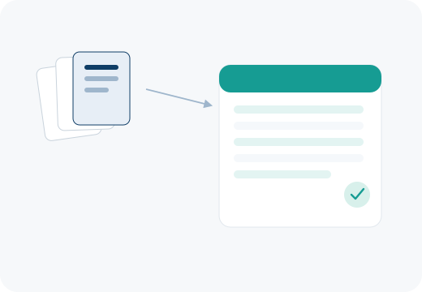

Services
Implementation and support across the study lifecycle
MainEDC is software, but most studies also need the team behind it — for setup, training, document migration, validation and day-to-day support.
EDC implementation & eCRF design
Study configuration using a ready-made solution (typically 3 weeks–8 months) or a fully custom build (up to 4 months), depending on protocol complexity.
Study configuration
Edit-checks, validation rules and workflow setup tailored to the protocol, built with the MainEDC WEB Builder.
Training
Onboarding sessions for data managers, monitors, investigators and site coordinators.
Document management (DMS)
Digitizing and structuring paper-based archives so historical records become searchable and analysis-ready.
IT consulting & outsourcing
Infrastructure, security and integration support for teams that need it, including LIMS and e-signature integration.
Quality assurance
Ongoing QA support across the study data lifecycle, from setup through database lock.
Validation
GAMP 5-aligned validation documentation to support inspection readiness.
Mentoring
Hands-on guidance for in-house data management teams adopting MainEDC for the first time.
Ongoing support
Standard (8×5) or extended (8×5/12×5) support, covering platform, integration and process questions throughout the study.
Document management
Paper archives, structured into searchable records
For studies and sites still working from paper, the document management service digitizes source records and organizes them into a structured, searchable archive — a common first step before historical data can be analyzed or migrated into MainEDC.

What to expect
Typical implementation timelines
| Approach | Typical timeline |
|---|---|
| Ready-made solution, configured to your study | 3 weeks – 8 months |
| Fully custom build | Up to 4 months |
| Demo / trial access | Available on request |
| Ongoing support | Through the full study lifecycle |
Timelines depend on protocol complexity and integration requirements — treat the above as indicative, confirm exact figures with the DM365 team before quoting a client.
Pricing
Starting from ₽29,000 / month
MainEDC pricing is usage-based and scales with study size and modules in use. A reduced first-month rate is typically available for new customers.
[Confirm current pricing and what's included in the base tier before publishing — pricing structures change]